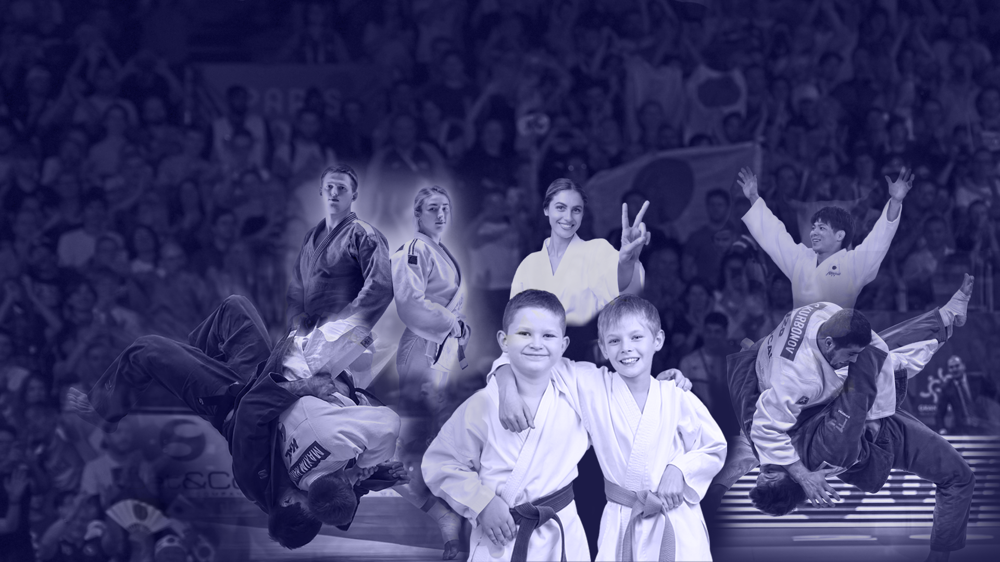
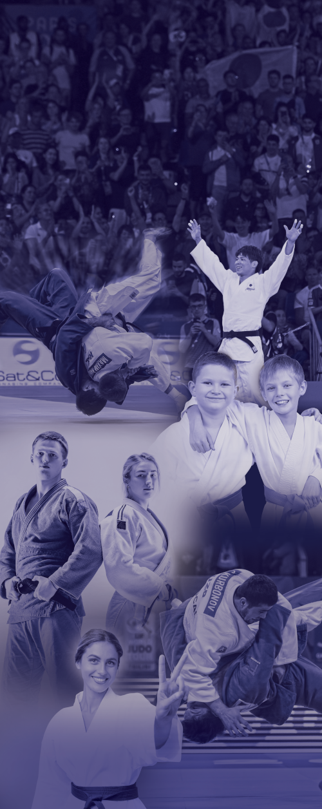
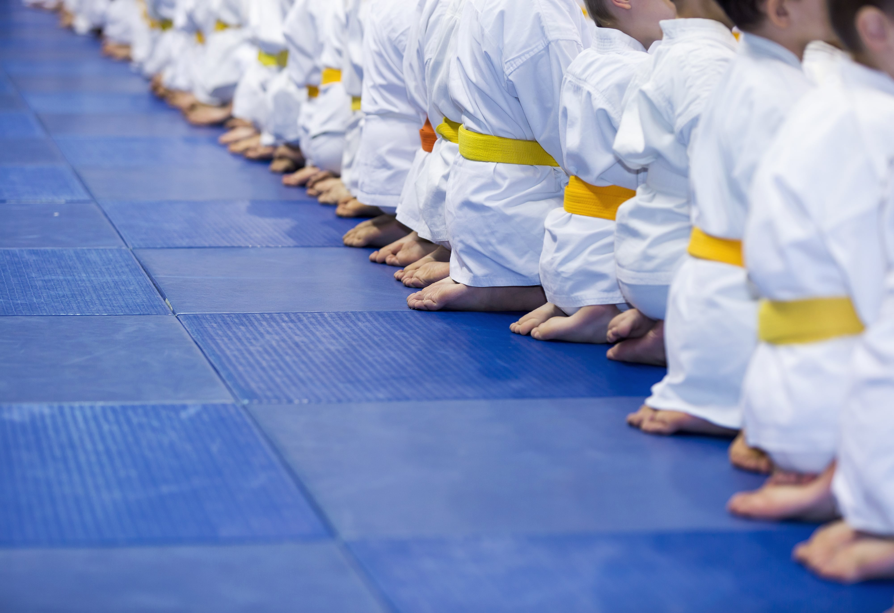
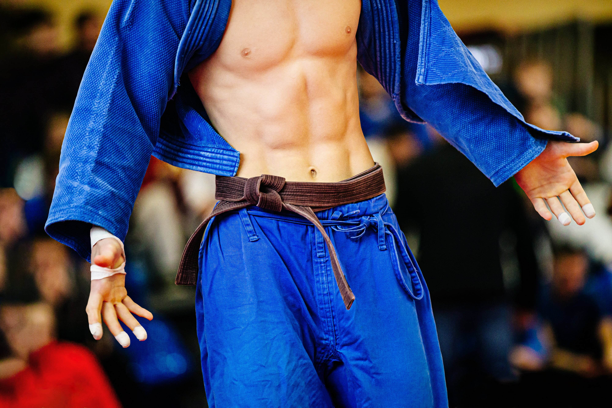
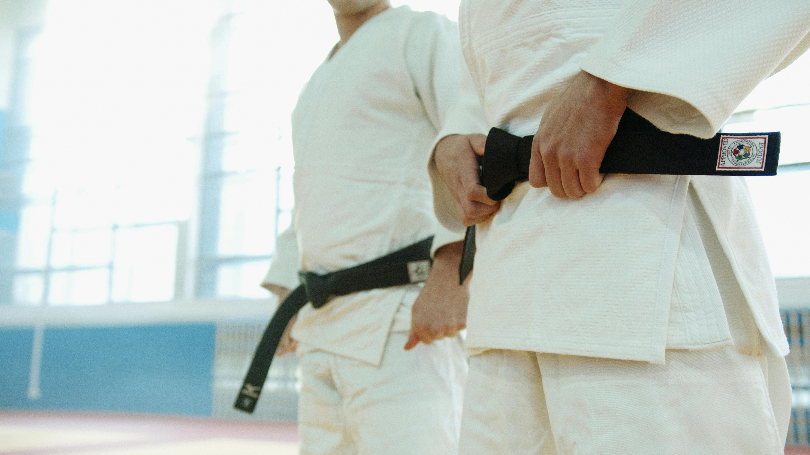
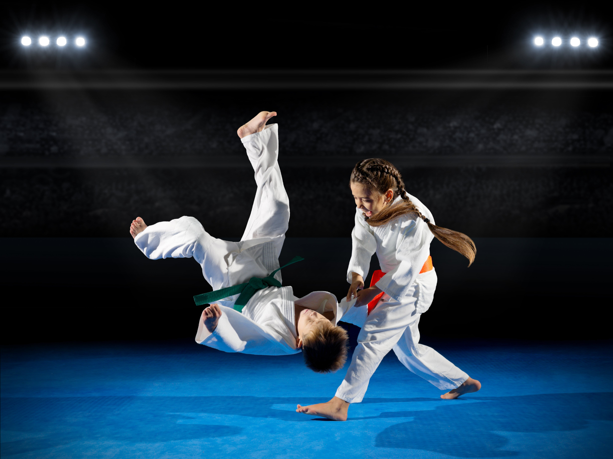

За клуба
Джудо Център Кано е първата детска школа в град Варна, основана през 2010 година от Сенсей Дехгхани - дипломиран в КОДОКАН, Япония с над 45 години опит състезателна и треньорска дейност.
Школата има дългогодишна история и много практика в работата с деца, възрастни и хора в неравностойно положение, като през годините е създала много шампиони в местни, и международни турнири. Клубът е лицензиран от Министерството на младежта и спорта, и Българската федерация по джудо.
Джудо Център Кано разполага с нова база в модерна сграда Клас А. Занятията се провеждат в добре оборудвана зала със собствена климатизация на професионална джудо настилка - татами.

Джудо за деца
Заради своята същност, японска философия и дисциплина, и като единственото бойно изкуство без удари, джудо не е само спорт. Джудо е начин на живот, който оформя личности и занятията за деца стават все по-търсени, и предпочитани от родителите по цял свят.
Джудо учи на дисциплина, уважение и постоянство!
Гордеем се, че имаме опита от практиката да обучаваме деца в различни възрастови групи след навършване на 5 годишна възраст. Графикът на занятията може да видите тук:

Джудо за любители
В нашия спорт няма ограничения за пол и възраст, което го прави уникален, търсен и уважаван от милиони хора по света. Всеки, който желае да практикува джудо за лично усъвършенстване и придобиване на знания да се чувства поканен.

Джудо за състезатели и напреднали
Джудо Център Кано предлага обучение, подготовка и сертифициране на състезатели и напреднали, съобразено с правилата на Международната джудо федерация – IJF и програми на Кодокан, Япония.
Всеки желаещ да продължи обучението си е добре дошъл да ни посети на място в някой от работните дни на Центъра.

График
17:00 - 18:30
За деца
19:00 - 20:30
За деца
19:00 - 20:30
За напреднали и любители
17:00 - 18:30
За деца
19:00 - 20:30
За деца
19:00 - 20:30
За напреднали и любители
17:00 - 18:30
За деца
19:00 - 20:30
За деца
10:00 - 11:30
За напреднали и любители
Почивен ден
Контакти
АДРЕС
бул. Ян Хунияди №31
ТЕЛЕФОН
087 817 4288
centerkano@gmail.com